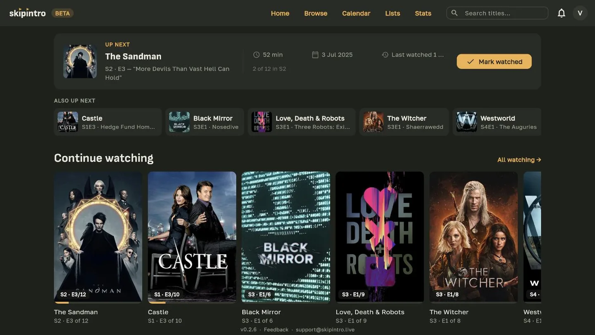
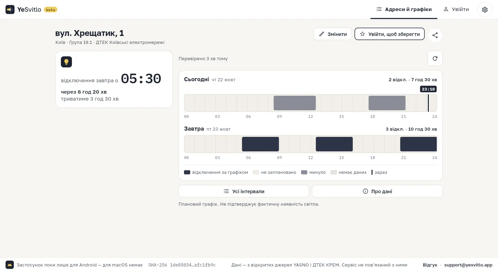
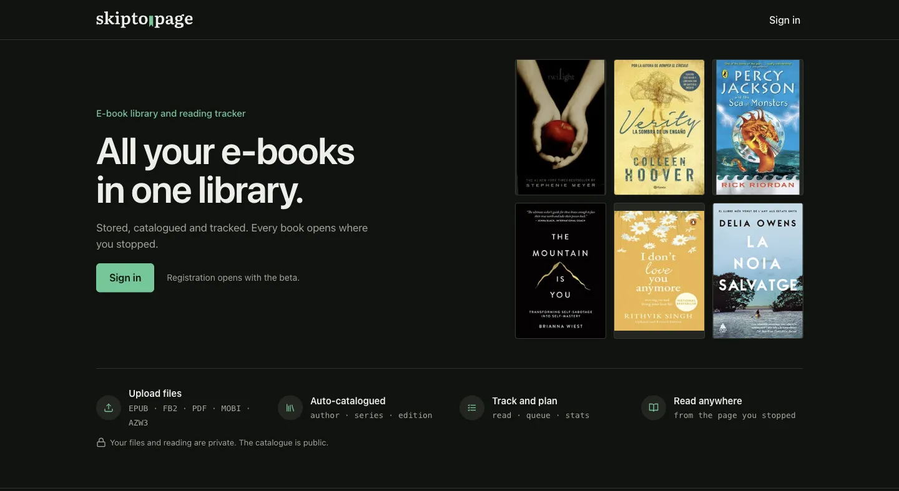
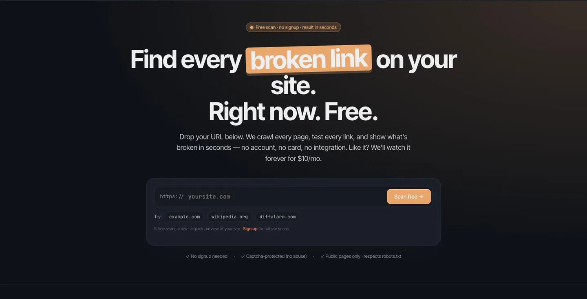
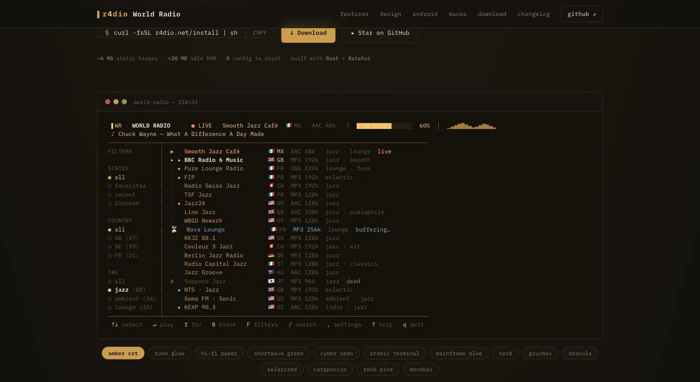

skipintro
Track the TV series, movies and anime you are watching — what is next, what is finished, what you dropped. Installable on the phone, works like an app.
skipintro.live ↗
Independent developer working end to end — web apps, Android, macOS and the terminal. Five products are live and in use today; three of them are still in beta.
Track the TV series, movies and anime you are watching — what is next, what is finished, what you dropped. Installable on the phone, works like an app.
skipintro.live ↗

Power outage schedules for your address in Kyiv. Pick the address once and see when the lights go off, straight from the official YASNO and DTEK data. Web + Android.
yesvitlo.app ↗An e-book library and reading tracker. Upload EPUB, FB2, PDF, MOBI or AZW3 — books are catalogued by author, series and edition, and every one opens where you stopped.
skipto.page ↗

Broken link checker for small and medium businesses. Crawls every page, checks every link, and sends scheduled email reports. No more lost leads to silent 404s.
diffalarm.com ↗A keyboard-driven internet radio player that lives in your shell. 56,000+ live stations, a real-time spectrum analyzer drawn in text, 14 retro palettes. Written in Rust, open source under MIT, with macOS and Android apps alongside the terminal build.
r4dio.net ↗